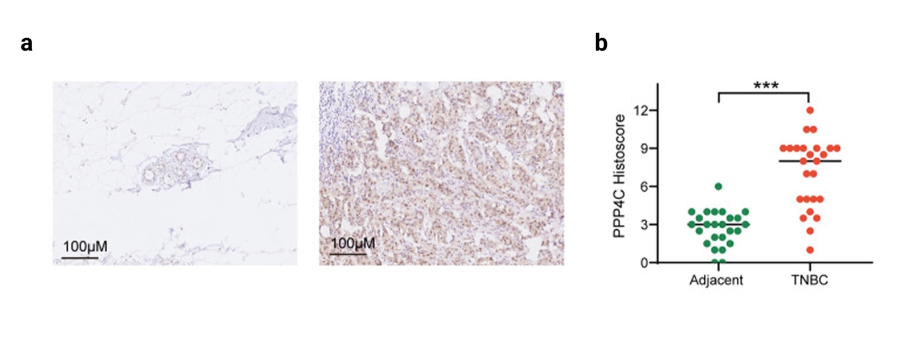

Section 05
Discussion
What the results suggest about PPP4C in breast cancer, how they compare with two published studies, and the limitations that affect how far they can be taken.
Interpretation of results
This project tested one gene, chosen before the analysis began. The results support some conclusions much more strongly than others.
A note on figure numbers. The figures on this page come from the two papers discussed below and are numbered 1–4. My own figures are on the Results page, and I refer to them here as Results Figure 1 to Results Figure 5.
PPP4C RNA is consistently higher in breast tumours. This is the strongest finding. The increase appeared in all five datasets across four platforms (Results Figure 1) and within 109 of 113 individual patients (Results Figure 2), so it can't be explained by differences between groups of patients or by one measurement technology. These data measure RNA, so they show that more PPP4C is being transcribed in tumours, not necessarily that there is more PPP4C protein or more PP4 activity.
The increase is found across all subtypes. PPP4C was raised in every PAM50 subtype (Results Figure 4), and the differences between subtypes were smaller than the difference between tumour and normal tissue. This suggests the change is a general feature of breast tumours and isn't specific to one type.
PPP4C is not one of the largest changes. In Results Figure 3, PPP4C is well within the significant region but far from the most extreme of the 39,393 genes tested. A change can be statistically consistent without being large or biologically dominant, and the strength of the PPP4C result is its reproducibility rather than its size.
The association with survival is modest and not clearly independent. Patients with higher PPP4C had worse five-year survival (hazard ratio 1.60, log-rank p = 0.021; Results Figure 5). After adjusting for age, stage and subtype, the hazard ratio was 1.53 with p = 0.0501 and a confidence interval reaching 1. This is a borderline result. It is consistent with PPP4C carrying some prognostic information, but it doesn't show that PPP4C predicts survival independently of known clinical factors. It should be treated as a hypothesis to test in another cohort, not as evidence of a new prognostic marker.
All of these results are associations measured in tumour tissue at a single point in time. They can't show whether PPP4C affects how tumours grow, or whether its increase is a side effect of other changes in the tumour. Answering that requires laboratory experiments, and the two published studies below include them.
Comparison with previous research
How the findings of Xie et al. (2022) and Li et al. (2026) relate to my own results.
Two papers are directly relevant. Xie et al. (2022) screened the whole phosphoprotein phosphatase catalytic (PPPCs) family in breast cancer and identified PPP1CA and PPP4C as the two members with clinical significance [1]. Their study started from the whole gene family, while mine started from PPP4C chosen in advance, so the two reached the same gene in different ways. Li et al. (2026) studied PPP4C in thyroid cancer and triple-negative breast cancer, combining database analysis with tissue staining and cell-line experiments [2]. These papers provide two kinds of evidence my project doesn't have: measurements of PPP4C protein, and experiments that test cause and effect.
Figure 1 — PPP4C knockdown reduces growth and migration
Reproduced from Xie et al. (2022) [1]. Three independent siRNAs against PPP4C in MCF-7 and MDA-MB-468 cells. a–b, knockdown confirmed by qPCR; c–d, confirmed by western blot against GAPDH. e, g, CCK-8 growth over four days. f, h, wound-healing closure at 48 h. Asterisks are the authors' own significance marks.
![Eight panels. Bar charts a and b show relative PPP4C expression falling from 1.0 in control cells to roughly 0.1-0.2 with each of three siRNAs, in MCF-7 and MDA-MB-468. Western blots c and d show the PPP4C band at 35 kDa fainter in all three knockdown lanes, with GAPDH unchanged. Growth curves e and g show control cells reaching an OD of about 2.0 by day 4 while all three knockdowns stay between about 0.85 and 1.3. Wound-healing panels f and h show narrower closure in knockdown cells, with closure dropping from about 48 percent to 14-33 percent in MCF-7 and to about 30-52 percent of control in MDA-MB-468.](assets/img/lit-xie2022-knockdown.jpg)
Not my data. This figure is reproduced from reference [1], published open access under CC BY 4.0. It's shown here for comparison with Results Figures 1–5 and isn't part of my own analysis.
How this relates to Results Figure 1. My data show that PPP4C RNA is higher in tumours, but that could mean PPP4C contributes to tumour behaviour, or simply that it changes along with other processes in tumour cells. In this experiment, reducing PPP4C slowed the cells down: growth curves separated by day 3 and ended about half as high, and wound closure decreased with all three siRNAs. Using three different siRNAs is important, because a single siRNA can affect unintended genes, while three giving the same result makes an off-target effect much less likely.
How this relates to Results Figure 4. The two cell lines are MCF-7 (ER-positive, luminal) and MDA-MB-468 (triple-negative, basal), and both responded to PPP4C knockdown. This fits with my finding that PPP4C is raised in every subtype.
Figure 2 — PPP4C protein in tumour and nearby tissue
Reproduced from Li et al. (2026) [2]. a, PPP4C immunohistochemistry (antibody staining) in nearby non-tumour breast tissue (left) and triple-negative breast cancer (right), scale bar 100 µm. b, histoscore for every specimen; horizontal bars are medians; *** is the authors' own mark for p < 0.001.

Not my data. Reproduced from reference [2], published open access under CC BY-NC-ND 4.0. Shown for comparison only.
Protein-level evidence. My analysis measured only messenger RNA (mRNA), and mRNA levels don't always match protein levels. This study measured the protein directly by staining tissue. The median histoscore was about 3 in nearby non-tumour tissue and about 8 in tumour, which supports Results Figures 1 and 2 at the protein level. Like Results Figure 2, it compares tumour with adjacent non-tumour tissue from the same specimens. Staining shows how much PPP4C protein is present, not how active PP4 is.
A difference between the studies. This cohort is triple-negative only, while Results Figure 1 includes all breast cancer. The two studies agree on the direction of the change.
Figure 3 — PPP4C in breast cell lines of four subtypes
Reproduced from Li et al. (2026) [2]. a, PPP4C mRNA relative to MCF-10A, a non-tumorigenic line (it doesn't form tumours). b, PPP4C protein by western blot against tubulin, quantified on the right. c, knockdown validation for the two siRNAs used in Figure 4. Asterisks are the authors' own significance marks.
![Panel a is a bar chart of relative PPP4C mRNA across five cell lines: MCF-10A set at 1.0, MCF7 about 1.3, SK-BR-3 about 1.9, MDA-MB-468 about 2.6 and MDA-MB-231 about 2.4, all marked significant against MCF-10A. Panel b shows a western blot with a faint PPP4C band in MCF-10A and stronger bands in the four cancer lines, quantified as roughly 0.42 for MCF-10A rising to about 0.95. Panel c shows PPP4C bands in MDA-MB-468 and MDA-MB-231 reduced by two siRNAs relative to a scrambled control, quantified to about 0.2-0.6 of control.](assets/img/lit-li2026-celllines.jpg)
Not my data. Reproduced from reference [2]. Shown for comparison only.
Subtypes in cell lines and tumours. Every cancer cell line has more PPP4C than the non-tumorigenic MCF-10A, including the luminal MCF7, the HER2-amplified SK-BR-3 and both triple-negative lines. This matches my finding that PPP4C is raised in all five PAM50 subtypes. The order is different, though. Their two highest lines are triple-negative, while in my 1,083 tumours the highest median was HER2-enriched at 7.27 and Basal-like was in the middle at about 6.9.
This doesn't contradict my results, because the two can't be directly compared. Five cell lines grown in the lab for decades don't represent the range of tumours found in patients. Their data supports PPP4C being raised across subtypes, which agrees with my results, but the question of which subtype has the highest level is better answered by patient tumours.
Figure 4 — Effects of PPP4C knockdown on breast cancer cells
Reproduced from Li et al. (2026) [2]. Two siRNAs against PPP4C in MDA-MB-468 and MDA-MB-231. a–b, CCK-8 growth up to 96 h. c–d, colony formation. e–f, transwell migration and invasion, counted per field. Asterisks are the authors' own significance marks.
![Growth curves a and b show control cells reaching an OD450 of about 2.4 and 3.3 at 96 hours while both knockdowns stay well below, separating from 72 hours onward. Colony formation panels c and d show crowded control plates and sparse knockdown plates, with relative clonogenicity falling from 100 percent to about 20 percent in MDA-MB-468 and to about 58 and 12 percent in MDA-MB-231. Transwell panels e and f show dense purple-stained control membranes and sparse knockdown membranes, with migrated and invaded cells per field falling roughly by half in both cell lines.](assets/img/lit-li2026-function.jpg)
Not my data. Reproduced from reference [2]. Shown for comparison only.
Evidence for a causal role. Patient tissue data like mine can show association but not causation. In this experiment, PPP4C was reduced first, and then growth, colony formation, migration and invasion all decreased. This shows that, in these two cell lines, PPP4C affects cell behaviour.
A possible link to survival. If PPP4C supports tumour growth and invasion, patients with higher PPP4C might be expected to have more aggressive disease, which would fit the hazard ratio of 1.60. This is a possible explanation, but it hasn't been tested. None of these experiments used my patients' samples, and cells moving through a membrane in the lab are very different from a tumour spreading in the body.
How far previous research supports these results
The published studies support several of my findings, but there are four reasons not to treat them as full confirmation.
Shared data sources
Xie et al. used the same public databases as this project, including TCGA, so some of the agreement between our expression results comes from analysing overlapping data. Their cell-line experiments and Li et al.'s tissue staining are independent evidence; their database analyses are less so.
Survival result not independently tested
Both papers report worse survival with higher PPP4C, but neither tested my model on my patients with the same adjustments. My adjusted result (p = 0.0501) remains borderline.
Cell lines are not tumours
The experiments in Figures 1, 3 and 4 above used cultured cell lines, which lack the immune cells, surrounding tissue and treatment history of real tumours. They show what PPP4C can do in cells, not what it is doing in the 1,570 tumours analysed here.
Which cells express PPP4C
Li et al.'s staining shows PPP4C protein in tumour tissue, but my RNA data come from whole tissue samples, so they can't show which cell types the PPP4C signal comes from.
Limitations of this study
The following limitations apply to the whole study, regardless of the results.
Association, not causation
Even if PPP4C is linked to survival, this doesn't mean it causes worse outcomes. Differences in expression could result from tumour biology, treatment, or the mix of cell types in each sample. The knockdown experiments described above test causation in cell lines, but that doesn't prove the same is true in patients.
Reliance on TCGA
TCGA-BRCA was not designed to be representative of all breast cancer patients and has its own recruitment and demographic biases. The GEO datasets help with replication, but the survival analysis uses TCGA alone, and both published studies also draw on the same public data.
Bulk tissue, mixed cells
Bulk RNA-seq measures an average across tumour cells, immune cells and surrounding tissue. A change that appears to come from tumour cells could actually reflect a change in the proportion of other cell types.
Multiple testing
PPP4C was chosen before the analysis, which avoids the problem of picking the best result out of thousands. Genes reported as correlated with PPP4C were not chosen in advance, so their correlation values are likely to be overestimated.
Median split
Splitting patients at the median makes survival curves easy to read, but reducing expression to two groups loses information and gives a weaker test than using expression as a continuous value. For this reason, the continuous Cox model is the main analysis.
Incomplete clinical data
Treatment information in the public clinical records is incomplete, so survival differences can't be fully separated from differences in treatment.
Small number of deaths
The survival analysis is based on 99 deaths within five years. This limits statistical power and is why the confidence intervals are wide.
RNA, not protein
This project measured only mRNA. Li et al. found the same direction of change in PPP4C protein in a different cohort, but that doesn't confirm protein levels in my samples, and neither RNA nor protein levels show how active PP4 is.
Future research
Follow-up analyses that would address the main limitations of this study.
- Repeat the survival analysis with treatment included as a covariate where the data allow. With 99 deaths and an adjusted p of 0.0501, an unmeasured factor such as treatment could change the result.
- Test the survival association in an independent cohort with follow-up data, to see whether the borderline adjusted result is replicated.
- Check PPP4C protein levels in a public proteomics dataset such as CPTAC-BRCA. Figure 2 above only shows protein data for triple-negative breast cancer.
- Estimate the proportions of different cell types in each sample (deconvolution) to test whether the PPP4C signal is affected by immune cell content, which neither published study addresses.
- Use a single-cell RNA-seq dataset to find out which cell types express PPP4C.
- Repeat the tumour-versus-normal and survival analyses in triple-negative tumours only, so the results can be compared directly with Li et al.
- Test whether genes co-expressed with PPP4C overlap with the WNT signalling, antigen presentation and DNA repair pathways reported by Xie et al. [1].
- Check whether changes in PPP4C copy number at 16p11.2, rather than changes in how the gene is regulated, explain the expression differences.
- Pre-register the thresholds and analysis plan before analysing any new validation cohort.
References
- Xie W, Sun Y, Zeng Y, Hu L, Zhi J, Ling H, Zheng X, Ruan X, Gao M. Comprehensive analysis of PPPCs family reveals the clinical significance of PPP1CA and PPP4C in breast cancer. Bioengineered. 2022;13(1):190–205. doi:10.1080/21655979.2021.2012316. Source of Figure 1 on this page.
- Li H, Chen Y, Guo G, Luo Q, Lin Q, Xie W, Yan M. PPP4C: a potential molecular marker and therapeutic target in thyroid cancer and triple-negative breast cancer. BMC Cancer. 2026;26:768. doi:10.1186/s12885-026-16083-2. Source of Figures 2–4 on this page.